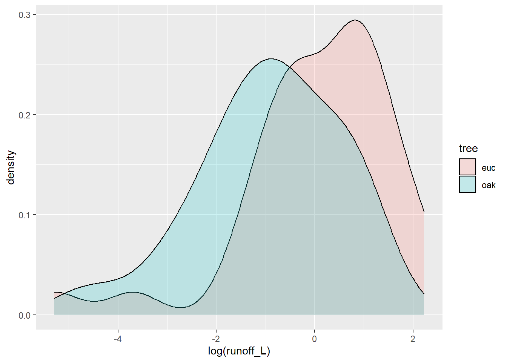

7 Statistics and Modeling

7.1 Goals of statistical analysis
To frame how we might approach statistical analysis and modeling, there are various goals that are commonly involved:
- To understand our data
- nature of our data, through summary statistics and various graphics like histograms
- spatial statistical analysis
- time series analysis
- To group or classify things based on their properties
- using factors to define groups, and deriving grouped summaries
- comparing observed vs expected counts or probabilities
- To understand how variables relate to one another
- or maybe even explain variations in other variables, through correlation analysis
- To model behavior and maybe predict it
- various linear models
- To confirm our observations from exploration (field/lab/vis)
- inferential statistics e.g. difference of means tests, ANOVA, X^2
- To have the confidence to draw conclusions, make informed decisions
- To help communicate our work
These goals can be seen in the context of a typical research paper or thesis outline in environmental science:
- Introduction
- Literature Review
- Methodology
- Results
- field, lab, geospatial data
- Analysis
- statistical analysis
- qualitative analysis
- visualization
- Discussion
- making sense of analysis
- possibly recursive, with visualization
- Conclusion
- conclusion about what the above shows
- new questions for further research
- possible policy recommendation
7.2 Summary Statistics
A simple statistical summary is very easy to do in base R:
summary(tidy_eucoak)## site site # tree Date month
## Length:180 Min. :1.000 Length:180 Min. :2006-11-08 Length:180
## Class :character 1st Qu.:2.000 Class :character 1st Qu.:2006-12-07 Class :character
## Mode :character Median :4.000 Mode :character Median :2007-01-30 Mode :character
## Mean :4.422 Mean :2007-01-29
## 3rd Qu.:6.000 3rd Qu.:2007-03-22
## Max. :8.000 Max. :2007-05-07
##
## rain_mm rain_subcanopy slope aspect runoff_L surface_tension
## Min. : 1.00 Min. : 1.00 Min. : 9.00 Min. :100.0 Min. : 0.000 Min. :28.51
## 1st Qu.:16.00 1st Qu.:16.00 1st Qu.:12.00 1st Qu.:143.0 1st Qu.: 0.000 1st Qu.:37.40
## Median :28.50 Median :30.00 Median :24.00 Median :196.0 Median : 0.825 Median :62.60
## Mean :37.99 Mean :34.84 Mean :20.48 Mean :186.6 Mean : 2.244 Mean :55.73
## 3rd Qu.:63.25 3rd Qu.:50.00 3rd Qu.:27.00 3rd Qu.:221.8 3rd Qu.: 3.200 3rd Qu.:72.75
## Max. :99.00 Max. :98.00 Max. :32.00 Max. :296.0 Max. :16.000 Max. :72.75
## NA's :36 NA's :4 NA's :8 NA's :44
## runoff_rainfall_ratio
## Min. :0.00000
## 1st Qu.:0.00000
## Median :0.03347
## Mean :0.05981
## 3rd Qu.:0.08474
## Max. :0.42000
## NA's :87.2.1 Summarize by group: stratifying a summary
eucoakrainfallrunoffTDR %>%
group_by(site) %>%
summarize(
rain = mean(rain_mm, na.rm = TRUE),
rainSD = sd(rain_mm, na.rm = TRUE),
runoffL_oak = mean(runoffL_oak, na.rm = TRUE),
runoffL_euc = mean(runoffL_euc, na.rm = TRUE),
runoffL_oakMax = max(runoffL_oak, na.rm = TRUE),
runoffL_eucMax = max(runoffL_oak, na.rm = TRUE),
)## # A tibble: 8 x 7
## site rain rainSD runoffL_oak runoffL_euc runoffL_oakMax runoffL_eucMax
## <chr> <dbl> <dbl> <dbl> <dbl> <dbl> <dbl>
## 1 AB1 48.4 28.2 6.80 6.03 6.80 6.80
## 2 AB2 34.1 27.9 4.91 3.65 4.91 4.91
## 3 KM1 48 32.0 1.94 0.592 1.94 1.94
## 4 PR1 56.5 19.1 0.459 2.31 0.459 0.459
## 5 TP1 38.4 29.5 0.877 1.66 0.877 0.877
## 6 TP2 34.3 29.2 0.0955 1.53 0.0955 0.0955
## 7 TP3 32.1 28.4 0.381 0.815 0.381 0.381
## 8 TP4 32.5 28.2 0.231 2.83 0.231 0.2317.2.2 Boxplot for visualizing distributions by group
A Tukey boxplot is a good way to visualize distributions by group. In this soil CO_2 study of the Marble Mountains, some sites had much greater variance, and some sites tended to be low vs high:
soilCO2_97$SITE <- factor(soilCO2_97$SITE)
ggplot(data = soilCO2_97, mapping = aes(x = SITE, y = `CO2%`)) +
geom_boxplot()